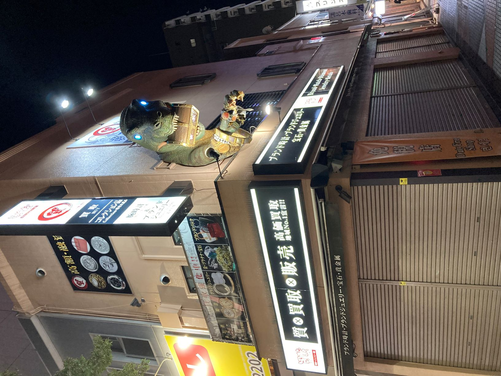
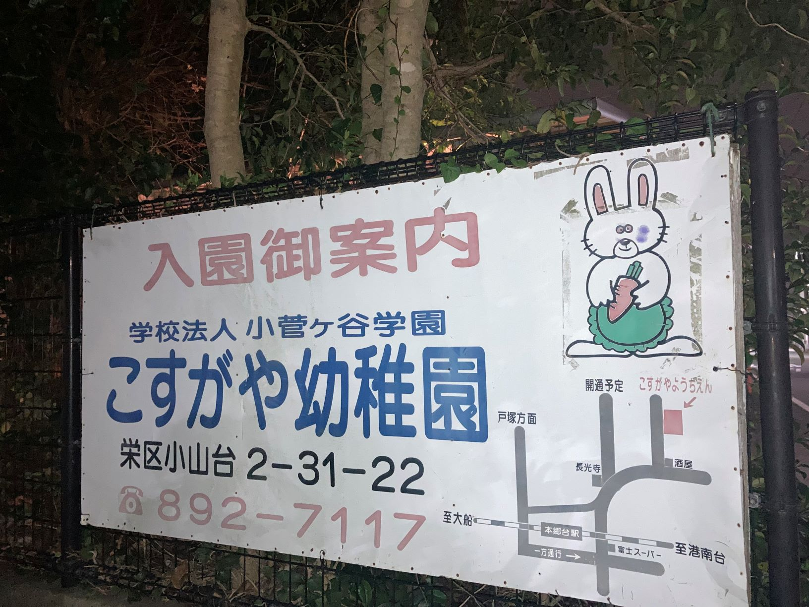
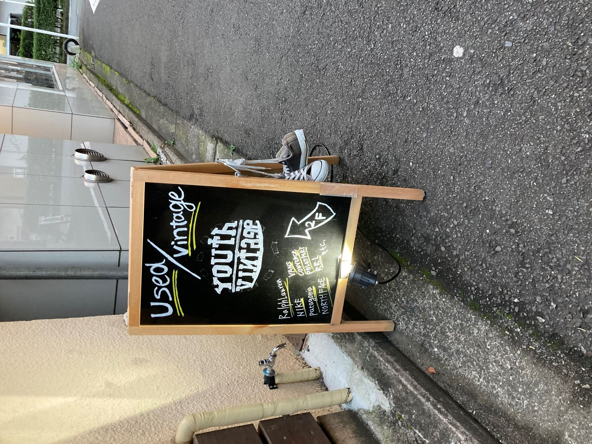

見つけた看板
関内のジュエリー店 １０月８日 （撮影者 自分）
壁から恐竜がはみ出していてゴージャスな雰囲気を感じ印象的だった。

本郷台の幼稚園 １０月９日 (撮影者 友人）
何年も変わっていない看板
ウサギについている青黒いシミが何とも言えない恐怖感を掻き立てる。

関内の古着屋 １０月１１日 (撮影者 自分
古着やであることがわかるようにコンバースのスニーカーがかかっている。
置くタイプの看板は新鮮な感じがした。
